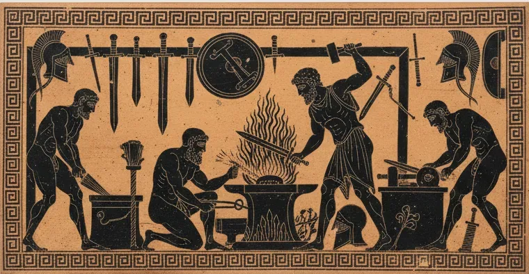
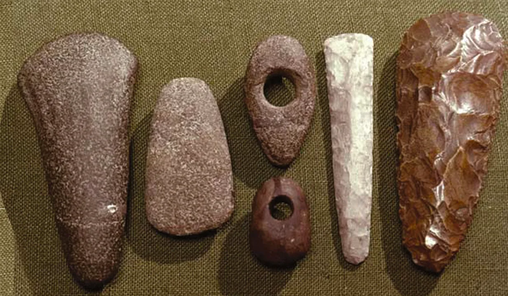
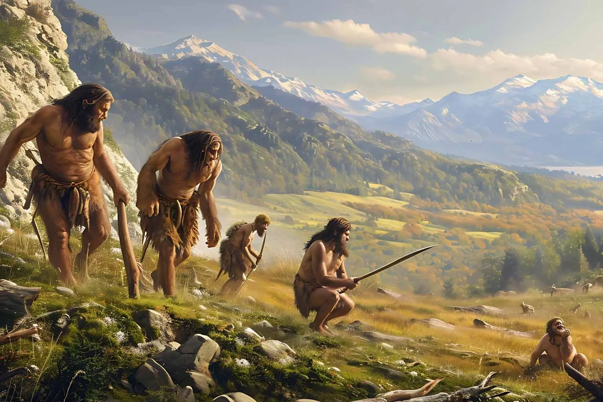
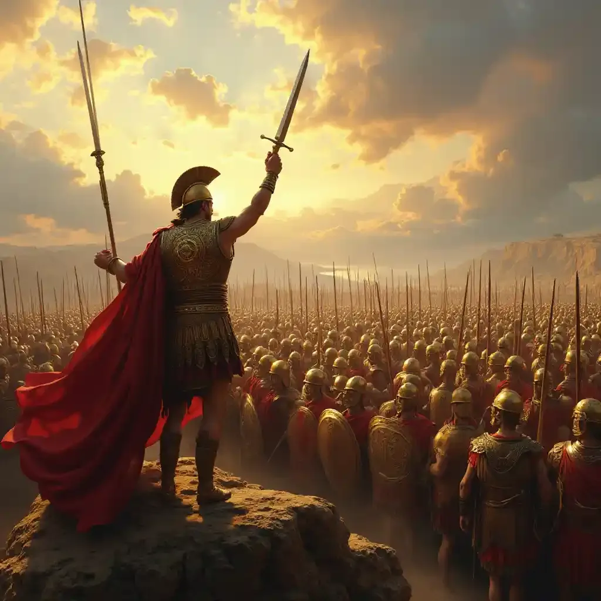
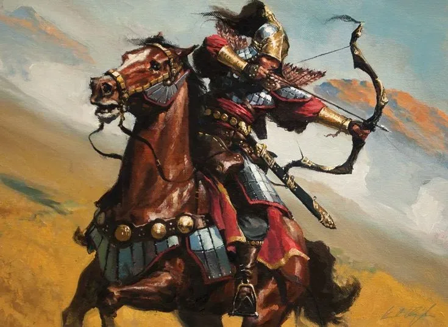
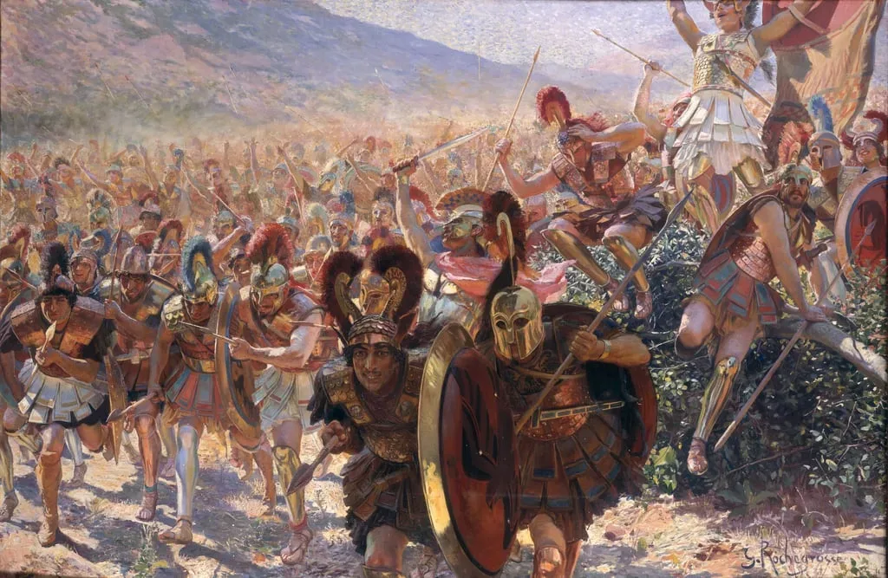

Оружие как зеркало истории
История оружия — это не просто история войн и конфликтов. Это история технологий, социальных изменений и перераспределения власти. Каждый новый вид оружия, от заострённого камня до мушкета, менял не только способы ведения боя, но и саму структуру общества.

Кузница как символ зарождения оружия и военной технологии
Орудия труда
Первые инструменты для выживания
Специализированное оружие
Инструменты становятся оружием
Власть и империи
Оружие создаёт политическую силу
На этом учебном ресурсе прослеживается ключевая сквозная идея: эволюция от простых орудий труда к специализированному оружию приводила к военному превосходству, которое со временем превращалось во власть — политическую, экономическую и культурную.
Хронология военной эволюции

Орудия → оружие
Фундаментальный переход от бытовых предметов к первым инструментам конфликта. Как топор для рубки дерева стал оружием войны.

Каменный век
Эпоха примитивных материалов и тактики засад. От кремневых ножей до первых луков — технологические прорывы древности.

Металлы и армии
Появление профессиональных воинов, доспехов и организованных армий. От бронзовых мечей к железным легионам.

Луки, арбалеты и конница
Революция дистанции и мобильности. Длинные луки против рыцарских доспехов, монгольские конные лучники — переворот в тактике.
Ранний огнестрел
Переход к массовым войнам нового времени. Как порох уничтожил рыцарство и создал современное централизованное государство.

Исторический пример: Битва при Марафоне
Эта битва 490 года до н.э. — прекрасный пример того, как вооружение и тактика определяли исход исторических событий. Греческие гоплиты, используя тяжёлые доспехи и фалангу, одержали победу над численно превосходящими персами.
Готовы начать путешествие?
Чтобы пройти путь эволюции оружия с самого начала, начните с первой точки хронологии